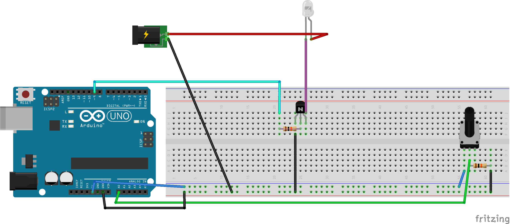
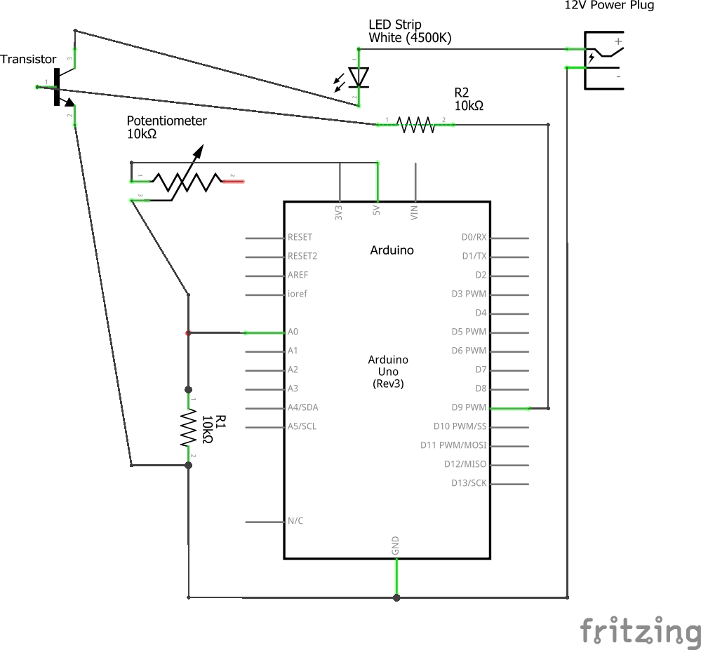

Zach Thomas Assignment 4: Transistors!

Here is a short gif of the functionality of my circuit. The rotary resistor determines the brightness of the LED strip. When turned clockwise the LED gets brighter and when turned counter-clockwise it gets dimmer.  Here is the breadboard diagram for my circuit.  Here is the technical schematic of the circuit. The Arduino pins provide a maximum of 5 Volts. In order to prevent the transistor from being damaged I included a 10K Ohm resistor in the circuit which flows from Pin 9 of the Arduino through the transistor to ground. The power supply provides 12 Volts. In order to prevent the Arduino from being damaged I included a 10K Ohm resistor between that power supply, the rotary potentiometer and pin A0.
/*
Zach Thomas
HCDE 439: Physical Computing
Assignment 4: Transistors
*/
// These constants won't change. They're used to give names to the pins used:
const int analogInPin = A0; // Analog input pin that the potentiometer is attached to
const int analogOutPin = 9; // Analog output pin that the LED is attached to
int sensorValue = 0; // value read from the pot
int outputValue9 = 0; // value output to the PWM (analog out)
void setup() {
// initialize serial communications at 9600 bps:
Serial.begin(9600);
}
void loop() {
// read the analog in value:
sensorValue = analogRead(analogInPin);
// map analog in value to the range of the analog out for the LED Strip:
outputValue9 = map(sensorValue, 520, 1023, 5, 250);
// Write the value to the LED Strip:
analogWrite(9, outputValue9);
// print the results to the Serial Monitor:
Serial.print("sensor = ");
Serial.print(sensorValue);
Serial.print("\t Light One = ");
Serial.print(outputValue9);
Serial.print("\t Light Two = ");
Serial.println(outputValue10);
// wait 2 milliseconds before the next loop for the analog-to-digital
// converter to settle after the last reading:
delay(2);
}